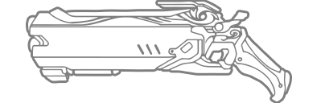

솔저
역할 : 공격
난이도 : ★☆☆

펄스 소총
난사 시에도 탁월한 안정성을 유지하는 전자동 소총입니다.

나선 로켓
펄스 소총으로 나선을 그리며 날아가는 작은 로켓들을 한번에 발사합니다. 로켓이 폭발하면 좁은 범위 안의 적들에게 피해를 줍니다.
질주
솔저: 76는 교전에서 벗어날 때든, 다시 합류할 때든, 필요할 때마다 폭발적인 속도로 뛸 수 있습니다. 질주 중 다른 행동을 취하면 질주를 멈춥니다.

전술 조준경
초정밀 표적 조준경이 조준선과 가장 가까운 적을 자동으로 포착합니다. 만약 적이 시야에서 벗어나면 빠르게 다음 적을 대상으로 설정합니다.